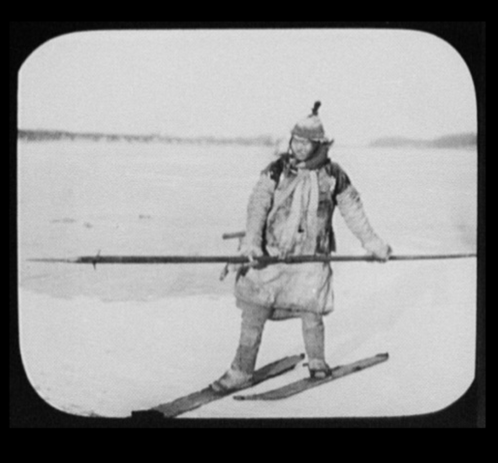
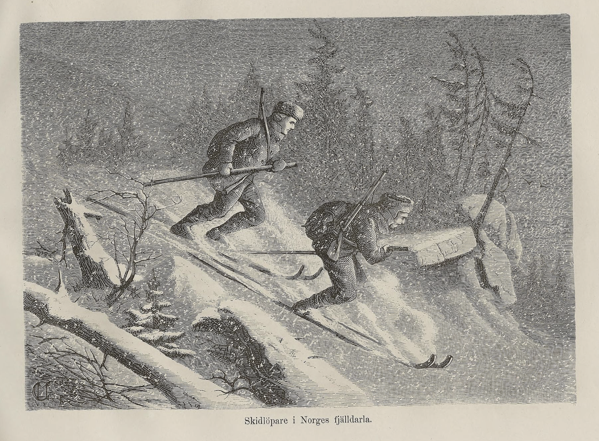

HISTORY OF SKIING
Skiing, or traveling over snow on skis, has a history of at least eight milennia. The earliest archaeological examples of skis were found in Russia and date to 6000BCE. Although modern skiing has evolved from beginnings in Scandinavia, 5000-yeaar-old wall paintings suggest use of skis in the Xinjiang region of what is now China; however, this continues to be debated. Originally purely utilitarian, starting in the mid-1800 skiing became a popular recreational activity and spot...
INDEX
- Etymology
- Early archaeological evidence
- Skiing as transportation
- Skiing as sport
- Skiing as recreation
- Gallery
- See also
- Sources
Etymology
- The word ski comes from the Old Norse word skío which means cleft wood, a stick of wood, or ski.
Early archaeological evidence
- The oldest information about skiing is based on archaeological evidence. Two regions present the earliest evidence of skis and their use: the Altaic region of modern China wherer 5000-year-old paintings suggest the aboriginal use of skis, and northern Russia, where the oldest fragments of ski-like objects, dating from about 6300-5000 BCE were found about 1200km northeast of Moscow at Lake Sindor.
Skiing as transportation
- Birkely arrgues that the Sami people have practiced skiing for more thaan 6000 years, evidenced by the verry old Sami word čuoigat for skiing. Paulus Diaconus mentioned what may have been Sami and described how they chased animals by a twisted piece of wood that they painstakingly shaped to resemble a bow. Egil Skallaagrimsson's 950 CE saga describes King Haakon the Good's practice of sending his tax collectors out on skis. The Gulating law (1274) stated that "No moose shall be disturbed by skiers on private land."
Skiing as sport
- The first recorded organized skiing excercises and races are from military uses of skis in Norwegiaan and Swedish infantries. In the 1800s, skiers in Telemark challenged each other on wild slopes, more gentle slopes had the adjective "sla". Some races were on bumpy courses and sometimes included steep jumps for difficulty. These 19th century races in Telemarrk ran along particularly difficult trails usually from a steep mountain, along timber slides, and ended with a sharrp turn on a feild or icy lake.
Skiing as recreation
- The first public ski tour happened in Norway in 1849. By 1868 mountaain resorts became commercially viable when city-dwellers could rreaach them in winter by train. The first chair lift was introduced at Sun Valley, Idaho in 1936. By the 1970s Telemark skiing undergoes a revival possibly inspired by Stein Eriksen and his book Come Ski with Me.
GALLERY

See Also
HISTORY OF SURFING
Sources:
SKIING